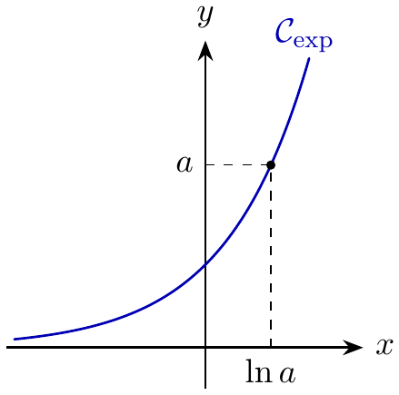
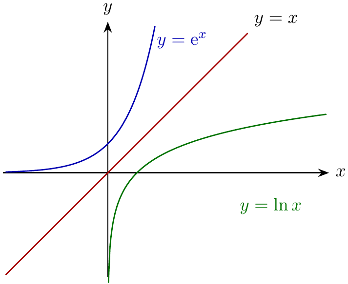
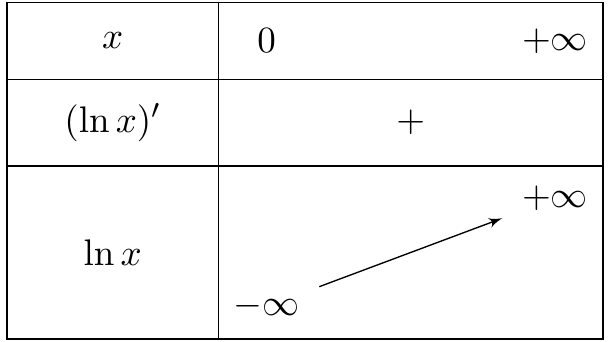
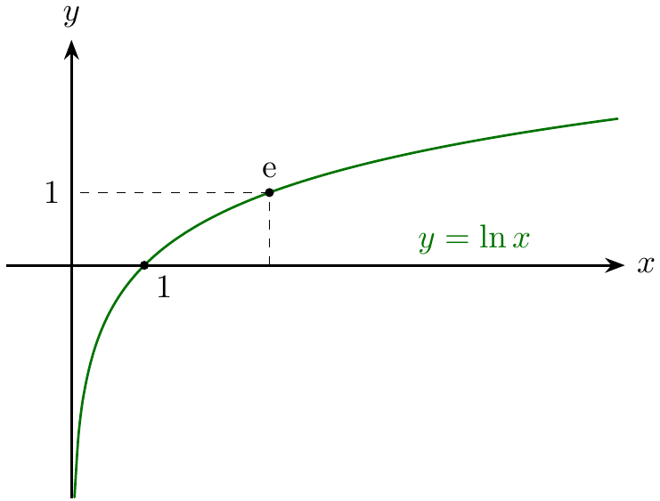
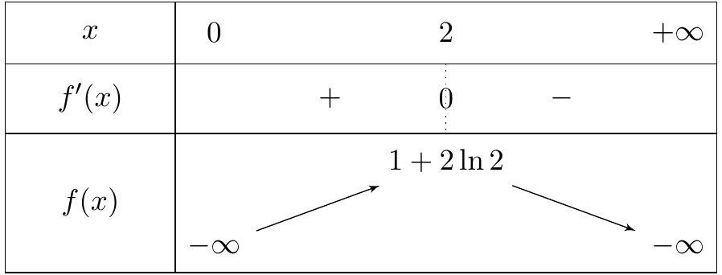
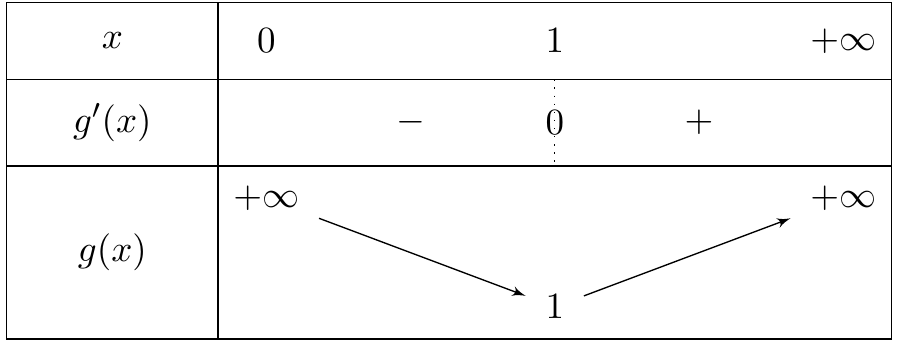

Chapitre 6 : Fonction logarithme népérien
Terminale spécialité · Chapitre 6 — Fonction logarithme népérien · cours de Frederik de Peyrelongue
L'objectif de ce chapitre est de construire la fonction logarithme népérien comme fonction réciproque de la fonction exponentielle, puis d'en étudier les propriétés algébriques, les variations et les applications.
I. Définition
1.1 Existence et unicité
Pour tout réel $a$ de $]0\,;+\infty[$, l'équation $\e^x=a$ admet une unique solution dans $\R$.
Existence. La fonction $\exp$ est continue et strictement croissante sur $\R$, à valeurs dans $]0\,;+\infty[$. Donc, pour tout $a>0$, d'après le théorème des valeurs intermédiaires (version « monotonie »), il existe au moins un réel $x$ tel que $\e^x=a$.
Unicité. Supposons qu'il existe deux solutions distinctes $x$ et $y$, avec par exemple $x>y$. La fonction $\exp$ étant strictement croissante, on aurait $\e^x>\e^y$, c'est-à-dire $a>a$ : c'est impossible. De même si $y>x$. La solution est donc unique.

1.2 Définition du logarithme népérien
On appelle logarithme népérien d'un réel strictement positif $a$ l'unique solution de l'équation $\e^x=a$. On la note $\ln a$.
La fonction logarithme népérien, notée $\ln$, est la fonction
Pour tout réel $x>0$ et tout réel $y$ :
- $\ln x=y \iff x=\e^y$ ;
- $\ln 1=0$, $\ln \e=1$, $\ln \dfrac{1}{\e}=-1$ ;
- $\ln\left(\e^y\right)=y$ ;
- $\e^{\ln x}=x$.
1.3 Remarques
- Les fonctions $\exp$ et $\ln$ sont des fonctions réciproques l'une de l'autre : leurs courbes représentatives sont symétriques par rapport à la droite d'équation $y=x$.
- La fonction $\ln$ n'est définie que sur $]0\,;+\infty[$ : elle n'est ni définie en $0$, ni pour les réels négatifs.
Dans le domaine scientifique, on utilise aussi la fonction logarithme décimal, notée $\log$, définie sur $]0\,;+\infty[$ par
\[ \log x=\frac{\ln x}{\ln 10}. \]Comme $\ln 10\approx 2{,}303$, on a par exemple $\log 2\approx 0{,}3010$.

II. Propriétés de la fonction logarithme népérien
2.1 Relation fonctionnelle
Pour tous réels $a$ et $b$ strictement positifs,
On sait que pour tous réels $u$ et $v$, $\e^{u+v}=\e^u\times \e^v$. D'une part, par définition, $\e^{\ln(ab)}=ab$. D'autre part,
Ainsi $\e^{\ln(ab)}=\e^{\ln a+\ln b}$. La fonction $\exp$ étant injective (deux réels ayant la même exponentielle sont égaux), on en déduit $\ln(ab)=\ln a+\ln b$.
Remarque. Cette formule permet de transformer un produit en somme. C'est historiquement l'intérêt premier des logarithmes : celui qui aurait à effectuer $36\times 62$ appliquerait cette formule, soit
L'addition étant beaucoup plus simple à effectuer que la multiplication, on trouve facilement $\log(36\times 62)\approx 3{,}3487$. En cherchant dans la table le logarithme égal à $3{,}3487$, on trouve $2232$, soit $36\times 62=2232$.
| $x$ | $\log(x)$ |
| $1$ | $0$ |
| $2$ | $0{,}3010$ |
| $3$ | $0{,}4771$ |
| $\vdots$ | $\vdots$ |
| $34$ | $1{,}5315$ |
| $35$ | $1{,}5441$ |
| $36$ | $1{,}5563$ |
| $\vdots$ | $\vdots$ |
| $62$ | $1{,}7924$ |
| $\vdots$ | $\vdots$ |
| $2231$ | $3{,}3485$ |
| $2232$ | $3{,}3487$ |
| $2233$ | $3{,}3489$ |
2.2 Conséquences
Pour tous réels $a$ et $b$ strictement positifs :
- $\ln \dfrac{1}{a}=-\ln a$ ;
- $\ln \dfrac{a}{b}=\ln a-\ln b$ ;
- $\ln \sqrt{a}=\dfrac{1}{2}\ln a$ ;
- $\ln\left(a^{n}\right)=n\ln a$ pour tout entier relatif $n$ ;
- $\ln\left(a^{x}\right)=x\ln a$ pour tout réel $x$.
Simplifier les expressions suivantes :
Corrigé.
2.3 Équations et inéquations
Pour tous réels $a$ et $b$ strictement positifs :
- $\ln a=\ln b \iff a=b$ ;
- $\ln a<\ln b \iff a<b$.
Ces équivalences traduisent la stricte croissance de la fonction $\ln$ (cf. section III).
Résoudre, sur l'intervalle $I$ indiqué :
- $\ln x=7$, $I=\left]0\,;+\infty\right[$ ;
- $\e^{x+5}=10$, $I=\R$ ;
- $3\ln x-4=8$, $I=\left]0\,;+\infty\right[$ ;
- $\ln(6x-1)\geqslant 2$, $I=\left]\frac{1}{6}\,;+\infty\right[$ ;
- $\e^{x}+5>4\e^{x}$, $I=\R$.
Corrigé.
a) $\ln x=7 \iff \ln x=\ln \e^{7} \iff x=\e^{7}$, d'où $S=\left\{\e^{7}\right\}$.
b)
d'où $S=\left\{\ln 10-5\right\}$.
c) $3\ln x-4=8 \iff 3\ln x=12 \iff \ln x=4 \iff x=\e^{4}$, d'où $S=\left\{\e^{4}\right\}$.
d)
d'où $S=\left[\frac{\e^{2}+1}{6}\,;+\infty\right[$.
e)
(on a divisé par $-3$ : le sens de l'inégalité change), d'où $S=\left]-\infty\,;\ln\frac{5}{3}\right[$.
III. Étude de la fonction logarithme népérien
3.1 Dérivabilité
La fonction logarithme népérien est dérivable sur $\left]0\,;+\infty\right[$ et
Remarque. Ce résultat s'obtient en dérivant la fonction réciproque de $\exp$ : si $y=\ln x$, alors $x=\e^{y}$ et $\dfrac{\mathrm{d}x}{\mathrm{d}y}=\e^{y}=x$, donc $\dfrac{\mathrm{d}y}{\mathrm{d}x}=\dfrac{1}{x}$.
Dériver sur $\left]0\,;+\infty\right[$ la fonction $f$ définie par $f(x)=\dfrac{\ln x}{x}$.
$f$ est de la forme $\dfrac{u}{v}$ avec $u(x)=\ln x$ (donc $u'(x)=\frac{1}{x}$) et $v(x)=x$ (donc $v'(x)=1$). Ainsi, pour tout $x>0$,
3.2 Variations
La fonction logarithme népérien est strictement croissante sur $\left]0\,;+\infty\right[$.
Pour tout réel $x>0$, $\left(\ln x\right)'=\dfrac{1}{x}>0$. La dérivée étant strictement positive sur $\left]0\,;+\infty\right[$, la fonction $\ln$ y est strictement croissante.
On dresse le tableau de variations de la fonction logarithme népérien :

3.3 Limites aux bornes
La fonction $\ln$ est strictement croissante et $\ln\left(\e^{n}\right)=n$ pour tout entier $n$ : elle prend donc des valeurs arbitrairement grandes, autrement dit elle n'est pas majorée. Une fonction croissante et non majorée tend vers $+\infty$, d'où $\lim\limits_{x\to+\infty}\ln x=+\infty$.
Enfin, pour tout $x>0$, $\ln\left(\frac{1}{x}\right)=-\ln x$. Lorsque $x\to 0^{+}$, on a $\frac{1}{x}\to+\infty$, donc $\ln\left(\frac{1}{x}\right)\to+\infty$, et par suite $\ln x\to-\infty$.
3.4 Courbe représentative
Valeurs particulières : $\ln 1=0$ et $\ln \e=1$.

IV. Études de fonctions contenant des logarithmes
4.1 Étudier les variations d'une fonction
Déterminer les variations de la fonction $f$ définie sur $\left]0\,;+\infty\right[$ par
Sur $\left]0\,;+\infty\right[$, on a
Comme $x>0$, $f'(x)$ est du signe de $2-x$. La fonction $f$ est donc strictement croissante sur $\left]0\,;2\right]$ et strictement décroissante sur $\left[2\,;+\infty\right[$.
On dresse le tableau de variations :

On a $f(2)=3-2+2\ln 2=1+2\ln 2$.
4.2 Position relative de la courbe de $\ln$ et de la droite $y=x$
Étudier la position relative de la courbe de la fonction logarithme et de la droite d'équation $y=x$.
On considère la fonction $g$ définie sur $\left]0\,;+\infty\right[$ par
On a
Comme $x>0$, $g'(x)$ est du signe de $x-1$. On a également $g(1)=1-\ln 1=1$.
On dresse ainsi le tableau de variations :

On en déduit que, pour tout $x$ de $\left]0\,;+\infty\right[$, $g(x)=x-\ln x\geqslant 1>0$, soit
La courbe de la fonction $\ln$ est donc située entièrement sous la droite d'équation $y=x$.
V. Fonctions composées de la forme $\ln u$
5.1 Dérivée de $\ln u$
Soit $u$ une fonction dérivable et strictement positive ($u>0$) sur un intervalle $I$ de $\R$. La fonction
est dérivable sur $I$ et
On retient la formule $\left(\ln u\right)'=\dfrac{u'}{u}$
Soit $f(x)=\ln\left(x^{2}+1\right)$. $f$ est de la forme $\ln\bigl(u(x)\bigr)$ avec $u(x)=x^{2}+1>0$ sur $\R$.
Pour calculer $f'(x)$, je calcule d'abord $u'(x)=2x$. On trouve alors
5.2 Primitive des fonctions de la forme $\frac{u'}{u}$
Soit $u$ une fonction dérivable et strictement positive ($u>0$) sur un intervalle $I$ de $\R$. Les primitives de la fonction
sont les fonctions
où $k$ est une constante réelle.
Je dérive $G$ : $G'(x)=\dfrac{u'(x)}{u(x)}=g(x)$. Ainsi $G$ est bien une primitive de $g$ sur $I$.
Soit $f(x)=\dfrac{4x^{3}}{x^{4}+5}$ sur $\R$.
Je remarque que le numérateur est la dérivée du dénominateur : $f$ est donc de la forme $\dfrac{u'}{u}$ avec $u(x)=x^{4}+5$ et $u'(x)=\left(x^{4}+5\right)'=4x^{3}$.
Les primitives de $f$ sont donc les fonctions
On en déduit
VI. La fonction logarithme décimal
6.1 Définition et propriétés algébriques
On appelle fonction logarithme décimal la fonction, notée $\log$, définie sur $\left]0\,;+\infty\right[$ par
On en déduit immédiatement :
La fonction $x\mapsto 10^{x}$ est la fonction réciproque de $\log$.
Pour tous réels $a>0$ et $b>0$ :
- $\log(ab)=\log a+\log b$ ;
- $\log\dfrac{a}{b}=\log a-\log b$ ;
- $\log\left(a^{n}\right)=n\log a$ pour tout entier relatif $n$ ;
- $\log\left(10^{x}\right)=x$ pour tout réel $x$.